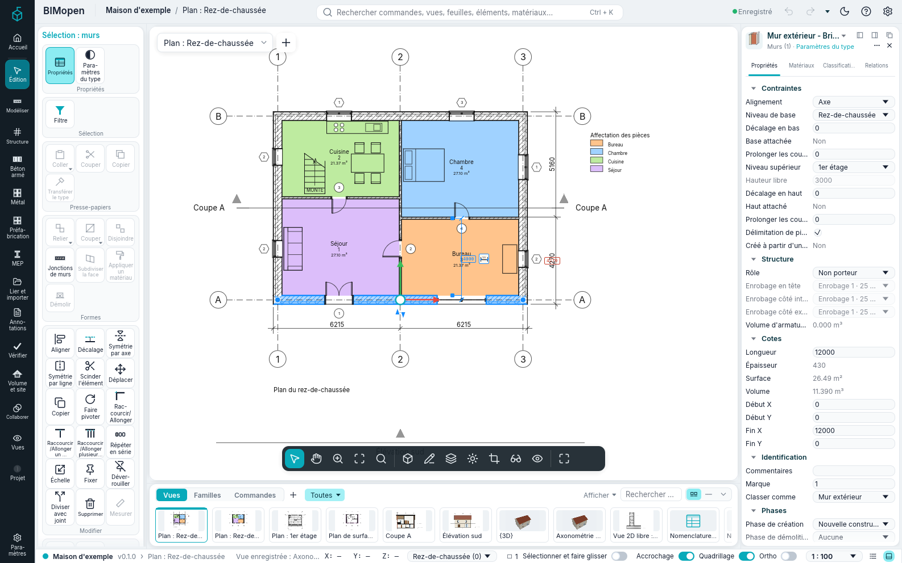
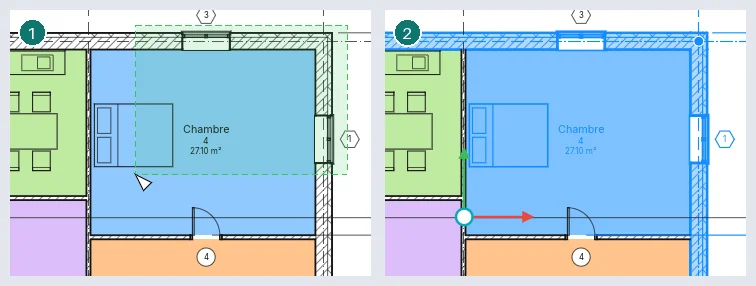
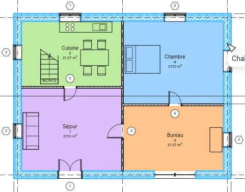
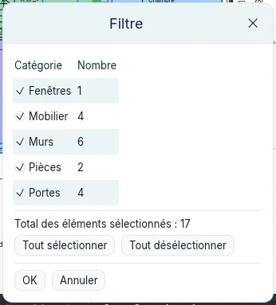
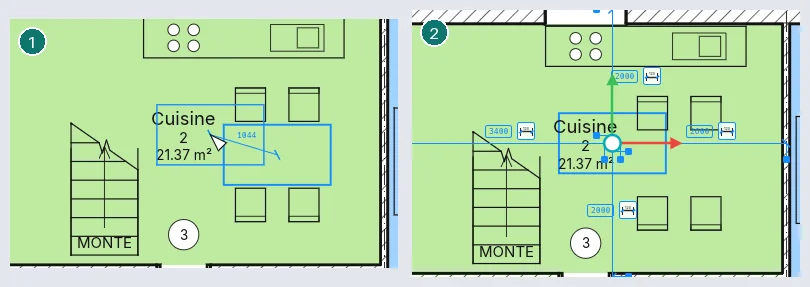
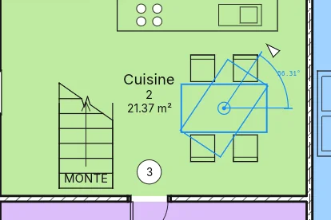

Sélection et modification
Avant presque toute modification, on sélectionne ce que l'on veut changer. Ce chapitre décrit comment les éléments sont mis en évidence et sélectionnés, comment on affine une sélection, comment on fait glisser les éléments sélectionnés, et les outils du groupe Modifier. Tout fonctionne de la même manière dans l'application de bureau et dans le navigateur.

Mettre en évidence et sélectionner
Placez le curseur sur un élément : ses lignes sont dessinées plus épaisses, la barre d'état en bas de la fenêtre le nomme (catégorie et type, comme Murs : Mur extérieur…), et après un instant les mêmes mots apparaissent sous le curseur. Cliquez pour sélectionner l'élément mis en évidence. Un élément sélectionné est dessiné dans la couleur de sélection dans chaque vue où il apparaît, et le nombre à l'extrémité droite de la barre d'état indique combien d'éléments sont sélectionnés.
Un clic droit sur un élément le sélectionne et ouvre le menu contextuel. Esc, ou un clic sur un endroit vide, efface la sélection.
| Pour… | Faites ceci |
|---|---|
| ajouter un élément à la sélection | Ctrl + clic |
| retirer un élément de la sélection | Shift + clic |
| sélectionner ce qui est entièrement dans une fenêtre | faites glisser de gauche à droite |
| sélectionner ce qu'une fenêtre touche | faites glisser de droite à gauche (la fenêtre est en tirets) |
| ajouter, ou retirer, ce qu'une fenêtre attrape | faites glisser avec Ctrl, ou avec Shift |
| sélectionner de nouveau ce qui était sélectionné auparavant | Ctrl+Left, ou clic droit ▸ Sélection précédente |

Les fenêtres fonctionnent dans les plans, les coupes, les feuilles et les vues 3D. Dans une vue 3D le bouton gauche sélectionne ; le bouton droit fait orbiter et le bouton central effectue un panoramique (voir L'interface).
Éléments proches : TAB
Quand des éléments sont proches ou superposés, celui qui est mis en évidence n'est pas toujours celui que vous voulez. Gardez le curseur immobile et appuyez sur Tab : l'élément suivant sous le curseur est mis en évidence et la barre d'état le nomme. Shift+Tab revient en arrière. Cliquez pour sélectionner l'élément mis en évidence. Dans une vue 3D, Tab passe de l'élément le plus proche à ceux qui sont derrière ; sur une feuille, entre les vues placées l'une sur l'autre.
Chaînes de murs et de lignes
Les murs et les lignes joints par leurs extrémités forment une chaîne. Le curseur sur l'un d'eux, Tab met en évidence toute la chaîne (la barre d'état indique Chaîne de n éléments joints) ; un clic la sélectionne. Une chaîne peut mêler murs, séparateurs de pièces et contours de surface ; les lignes de détail forment des chaînes avec les lignes de détail de leur vue. Là où trois éléments ou plus se rejoignent, la chaîne continue le long de celui qui forme le plus petit angle avec le dernier ; un mur qui s'arrête contre un autre entre ses extrémités prolonge la chaîne le long de ce mur.

Une partie de chaîne. Sélectionnez le premier élément de la partie, placez le curseur sur le dernier et appuyez sur Tab : les éléments compris entre eux sont mis en évidence. Un deuxième Tab met en évidence toute la chaîne, un troisième le dernier élément seul. Cliquez pour sélectionner ce qui est mis en évidence. Sur une chaîne fermée, la partie fait le tour du côté où se trouve le curseur : près de l'extrémité du dernier élément que ce sens atteint en premier.
Éléments joints en un point. Sélectionnez un élément et gardez le curseur dessus, près d'une extrémité où d'autres sont joints. Tab le met en évidence avec le plus proche de ceux qui y sont joints ; Tab de nouveau, tous les éléments joints à cet endroit. Cliquez pour les sélectionner.
Une chaîne sélectionnée. Là où deux murs ou lignes sélectionnés se rejoignent, une poignée ronde apparaît. Faites-la glisser pour déplacer la jonction : les extrémités sélectionnées qui s'y trouvent bougent ensemble et restent jointes ; les éléments non sélectionnés restent en place. Faites glisser la chaîne avec Shift pour la déplacer en entier, horizontalement ou verticalement ; faites-la glisser avec Ctrl pour en placer une copie.
Filtrer une sélection
Cliquez sur le nombre dans la barre d'état, ou sur Filtre dans la carte contextuelle, pour ouvrir Filtre. Il liste les catégories de la sélection, le nombre d'éléments de chacune et le total. Décochez une catégorie pour en écarter les éléments : la sélection et le nombre dans la barre d'état suivent aussitôt. Tout sélectionner et Tout désélectionner cochent ou décochent toutes les catégories. OK garde la sélection, Annuler rétablit celle du départ.

Sélectionner toutes les occurrences
Clic droit sur un élément ▸ Sélectionner toutes les occurrences, puis Visibles dans la vue
(les éléments du même type affichés dans la vue active) ou Dans tout le projet. Taper SA puis
Enter fait la même chose que Visibles dans la vue. L'élément doit avoir un type : les
pièces, par exemple, n'en ont pas.
Faire glisser des éléments
Faites glisser un élément sélectionné pour le déplacer ; toute la sélection se déplace ensemble, et un glisser s'annule avec un seul Ctrl+Z. Une cote temporaire montre le déplacement, et la barre d'état sa longueur (Déplacer : 1500). Avec Sélectionner et faire glisser activé dans la barre d'état, on peut faire glisser un élément sans le sélectionner d'abord ; désactivé, un glisser qui commence sur un élément non sélectionné dessine une fenêtre.
- Un mur joint par ses extrémités à des murs non sélectionnés ne se déplace que perpendiculairement à lui-même, et les murs joints s'allongent pour rester joints. Les murs qui s'arrêtent contre lui suivent aussi. Maintenez Shift pour le déplacer librement ; les murs joints suivent quand même.
- Tout autre élément se déplace librement ; maintenez Shift pour garder le déplacement horizontal ou vertical.
- Les portes et fenêtres se déplacent avec leur mur et gardent leur place le long de celui-ci. Glissées seules, elles coulissent le long du mur ; lâchées sur un autre mur, elles y passent.
- Maintenez Ctrl au début du glisser pour placer plutôt une copie.
On fait glisser des éléments dans les plans, les coupes et les élévations (le long de la vue), sur les feuilles (les vues) et dans les vues 3D, où ils se déplacent sur le plan horizontal où vous les avez saisis. Les touches fléchées déplacent la sélection d'un petit pas, arrondi à une valeur ronde selon le zoom de la vue ; avec Shift, de dix pas.
Les outils de modification
Le groupe Modifier de la carte contextuelle a trois rangées : Aligner, Décaler, Symétrie par axe, Symétrie par ligne, Scinder l'élément, Diviser avec joint ; Déplacer, Copier, Faire pivoter, Raccourcir/Allonger, Raccourcir/Allonger un élément, Raccourcir/Allonger plusieurs éléments ; Répéter en série, Échelle, Fixer, Déverrouiller, Supprimer. La barre d'état indique ce que chaque outil attend ensuite, et le bandeau des options montre ses options. Esc annule l'étape en cours ; pressée de nouveau, elle termine l'outil.
Déplacer, Copier, Faire pivoter, les deux outils Symétrie, Répéter en série et Échelle travaillent sur la sélection. Lancés sans rien de sélectionné, ils vous laissent sélectionner d'abord (clics, Ctrl, fenêtres, Tab), puis continuent quand vous appuyez sur Enter ou sur Fin dans le bandeau des options.
Déplacer, Copier et Faire pivoter fonctionnent aussi dans les vues 3D : leurs points sont pris sur le plan du niveau cliqué.
Avant chaque clic, l'outil montre ce que ferait le clic : la sélection dessinée là où elle irait (déplacée, copiée, tournée, en symétrie par rapport à l'axe sous le curseur, décalée du côté du curseur, alignée sur la référence), qui suit le curseur, avec la distance ou l'angle à côté.
Là où un outil demande un second point, vous pouvez taper une distance (ou un angle) et appuyer sur Enter : elle s'affiche à côté du curseur pendant la saisie et se mesure vers le curseur.
Déplacer
Cliquez sur un point de base, puis sur la destination. L'outil se termine et les éléments restent sélectionnés. Options :

- Contraindre : le déplacement se fait le long du mur sélectionné ou perpendiculairement à lui (horizontal ou vertical pour les autres éléments) ;
- Disjoindre : les murs joints aux murs déplacés ne suivent pas, et une porte ou une fenêtre peut être déplacée sur un autre mur ;
- Copier : des copies sont placées à la place ; avec Multiple, une à chaque clic jusqu'à Esc.
Copier
Comme Déplacer, mais une copie est placée. Avec Multiple, une copie à chaque clic jusqu'à Esc ; Contraindre comme pour Déplacer.
Faire pivoter
Le centre de rotation apparaît au milieu de la sélection ; faites-le glisser pour le placer ailleurs. Cliquez sur le premier rayon, puis sur le second : la sélection tourne de l'angle entre eux, montré par une cote angulaire temporaire. Au lieu du second rayon, tapez l'angle et appuyez sur Enter, ou tapez-le dans Angle du bandeau des options et appuyez sur Enter. Copier fait pivoter une copie ; sans Disjoindre, les murs joints à ceux qui tournent suivent.

Symétrie
Symétrie par axe : cliquez sur un mur, une grille ou une ligne comme axe. Symétrie par ligne : cliquez sur deux points. Copier est coché : une copie symétrique est placée ; décochez-le pour appliquer la symétrie aux éléments eux-mêmes.
Répéter en série
Linéaire : cliquez sur deux points. Numéro est le nombre total d'éléments. Avec Déplacer vers : 2° les deux points donnent l'espacement ; avec Dernier, le dernier élément va au second point et les autres sont répartis régulièrement. Contraindre garde la direction le long de la sélection ou perpendiculaire à elle.
Radial : faites glisser le centre autour duquel tournent les copies, cliquez sur le premier rayon, puis sur le second (ou tapez l'angle et appuyez sur Enter, aussi dans Angle). Avec 2° l'angle est celui entre voisins, avec Dernier c'est l'ouverture totale.
Décaler
Déplace un mur ou une ligne perpendiculairement à lui-même, ou en place une copie (Copier est coché).
- Numérique : réglez Décaler, puis cliquez sur l'élément du côté où il doit aller. Appuyez d'abord sur Tab pour décaler toute la chaîne (de la même catégorie) d'un seul tenant : ses angles sont conservés.
- Graphique : cliquez sur l'élément (Tab pour la chaîne), puis sur deux points : leur distance, perpendiculaire à l'élément, est le décalage. Vous pouvez aussi la taper. Ctrl copie.
Aligner
Cliquez sur la référence, puis sur l'élément à aligner : la face de l'élément la plus proche de votre clic va sur la face de la référence la plus proche de son clic. Préférence : choisit Faces du mur ou Axes du mur. Après l'alignement, un cadenas apparaît sur la face alignée : cliquez dessus pour garder les deux alignés, de sorte que déplacer la référence déplace aussi l'autre. Sans Alignement multiple, le clic suivant choisit une nouvelle référence ; avec l'option (ou en maintenant Ctrl), vous alignez plusieurs éléments sur la même. Esc une fois commence un nouvel alignement, deux fois termine l'outil.
Raccourcir/Allonger
Les murs et les lignes sont ajustés ou prolongés ; cliquez sur chacun du côté à garder.
- Raccourcir/Allonger : deux éléments, qui se rejoignent alors en angle ;
- Raccourcir/Allonger un élément : la limite, puis l'élément ;
- Raccourcir/Allonger plusieurs éléments : la limite, puis chaque élément tour à tour.
Scinder l'élément et Diviser avec joint
Scinder l'élément : cliquez sur un mur ou une ligne là où il doit devenir deux. Avec Supprimer le segment intérieur, cliquez sur deux points : la partie entre eux est supprimée, avec les portes et fenêtres qu'elle contient. Diviser avec joint : réglez Espace de jonction, puis cliquez : les deux parties sont séparées de cette distance.
Échelle
Les murs et les lignes (et la position des cotes) peuvent être mis à l'échelle ; avec autre chose dans la sélection, Échelle n'est pas disponible. Graphique : cliquez sur l'origine, la fin d'un premier vecteur, la fin d'un second : les éléments sont mis à l'échelle selon le rapport des deux longueurs (vous pouvez taper la seconde). Numérique : réglez Facteur d'échelle, puis cliquez sur l'origine. Les portes et fenêtres gardent leur distance au milieu de leur mur.
Fixer et Déverrouiller
Fixer maintient les éléments sélectionnés en place : on ne peut ni les faire glisser, ni les déplacer avec un outil, ni les supprimer, et un message l'indique. Un élément fixé montre une punaise lorsqu'il est sélectionné ; cliquez sur la punaise, ou utilisez Déverrouiller, pour le libérer.
Supprimer, annuler et rétablir
Supprimer (ou la touche Del) retire la sélection et ce qu'elle héberge ; les éléments fixés restent. Ctrl+Z annule la dernière modification et Ctrl+Y la rétablit : chaque outil, glisser ou déplacement aux flèches est une seule étape.
Raccourcis tapés
Tapez les lettres et appuyez sur Enter : MV Déplacer, CO Copier, RO Faire
pivoter, MM Symétrie par axe, DM Symétrie par ligne, AR Répéter en série,
OF Décaler, AL Aligner, TR Raccourcir/Allonger, SL Scinder
l'élément, SG Diviser avec joint, RE Échelle. PN fixe et UP déverrouille la
sélection, SA sélectionne toutes ses occurrences visibles dans la vue. Raccourcis
clavier les liste tous.
Pas encore disponible
- Tab pour atteindre une partie d'un élément : un panneau ou un meneau de mur-rideau, une partie d'un mur empilé ;
- Sélectionner toutes les occurrences depuis un type dans l'Index du projet ;
- Grouper et associer du Répéter en série ;
- la scission des murs le long d'une ligne horizontale dans les élévations et les vues 3D ;
- couper, copier et coller par le presse-papiers, Coller aligné, Créer identique.